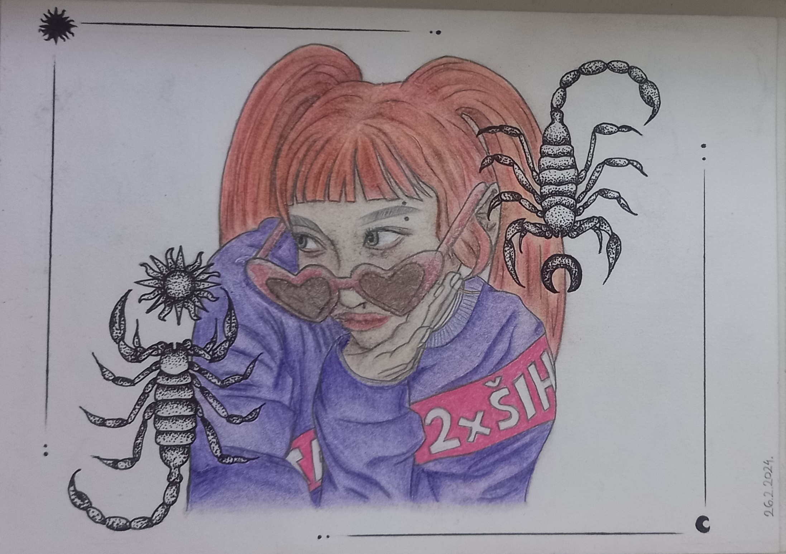
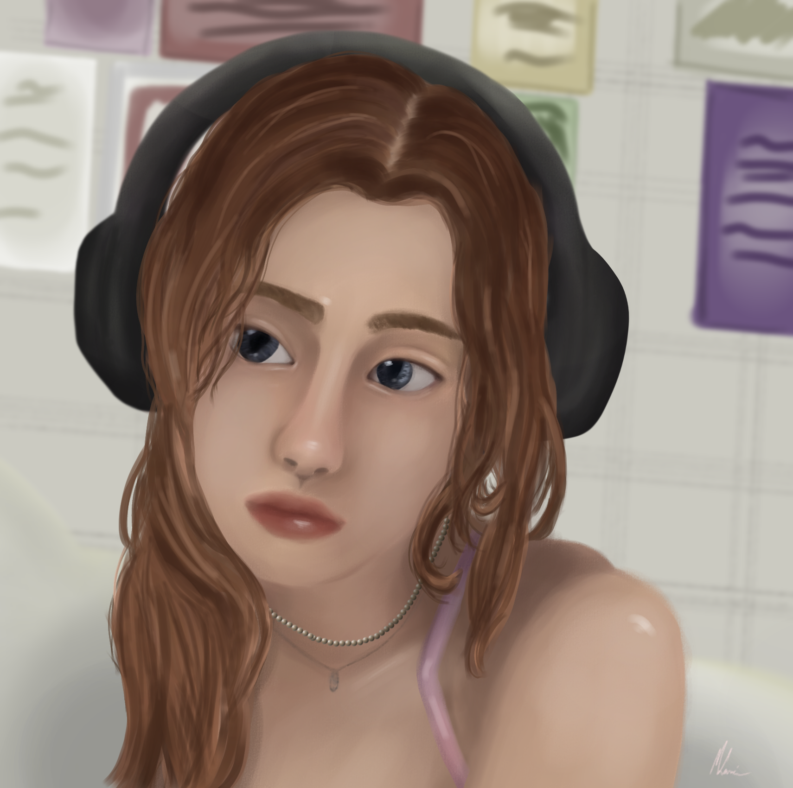

O meni
Moje ime je Marina Lazić i imam 19 godina. Trenutno studiram Dizajn grafičkih proizvoda na Grafičkom fakultetu u Zagrebu i smještena sam u studentskom domu Stjepan Radić. Rođena sam i inače živim u Osijeku. Slobodno vrijeme volim provoditi s prijateljima, gledati serije i filmove, čitati knjige te ponekad crtati. Vjerujem da će vam iduće slike pomoć da me bolje upoznate.
CRTEŽI
1. Toilet-Bound Hanako-Kun

Olovka i crna bojica: Inspiriran manga.panelom iz Toilet-Bound Hanako-Kun mange. Ovaj crtež sam nacrtala prvu godinu srednje.
2. Škorpion cura

Bojice: Sitan crtež koji sam nacrtala ove godine za vrijeme praznika čisto da se vratim u đir crtanja jer većinu srednje nisam imala vremena posvetiti se crtanju.
3. Look

Bojice: Moj pokušaj crtanja nećeg bizarnijeg.
4. Digitalni crteži (Ibispaint)



.png)
OSTALO
1. Aura efekt

Jedan od mojih prvih radova u photoshopu. Samo sam pratila youtube tutorial.
2. Poster za maturalni koncert

Osim likovne umjetnosti, volim se baviti i glazbom. Ovo je poster koji sam napravila za svoj maturalni koncer u Glazbenoj školi Franje Kuhača, Osijek.
Osobne inspiracije:
Jack Stauber
Junji Ito